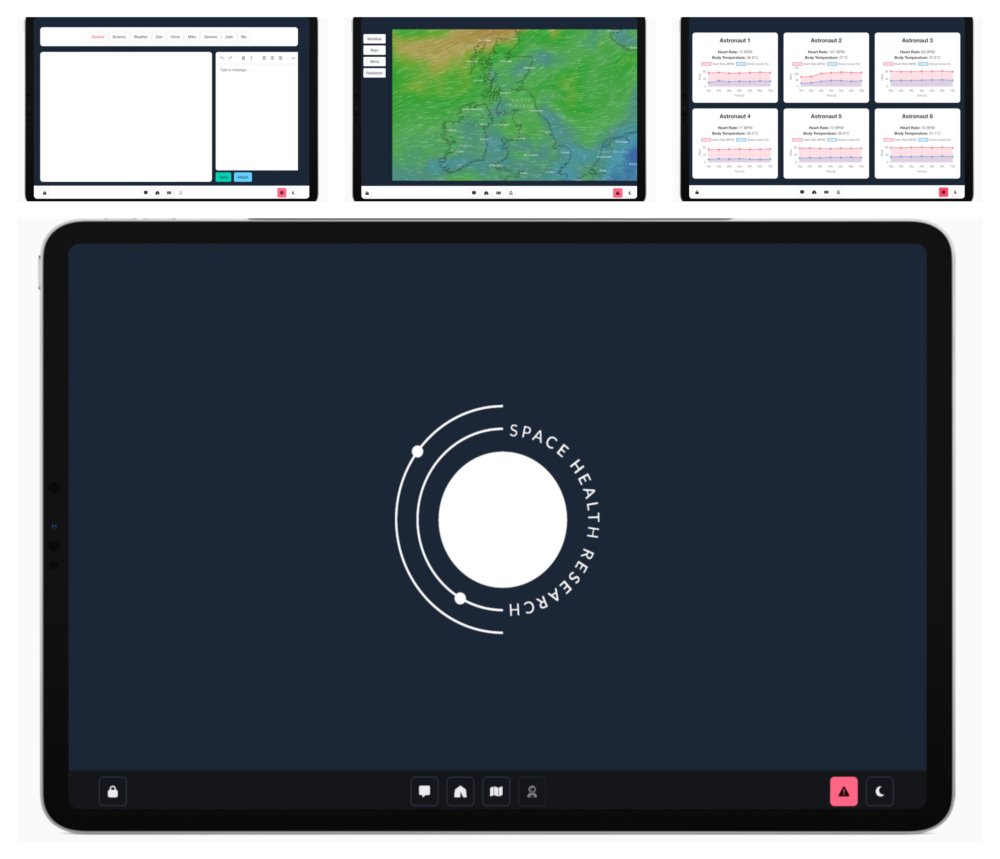

Software Projects
üöÄ Telemetry Dashboard (Rust + Redis + WebSocket)
A real-time terminal-based dashboard for streaming satellite and telescope telemetry data. Built in Rust using
ratatui for TUI and WebSocket-based updates. Supports live ISS tracking, power graphs, and future integration with egui.

üåå HabOS ‚Äì Analogue Mission Control (Go + WebSocket + Wails)
A mission control interface for analogue astronaut simulations, built with Go and Wails. Supports live telemetry via Redis and WebSockets, weather monitoring, and a time-delay communication system to simulate interplanetary conditions. Includes fallback safety protocols and modular integration for external research feeds.
üì° SDR & Ground Station Tools
Custom tools for decoding satellite downlinks and beacon packets. Scripts and Rust binaries for interfacing with RTL-SDR, GNURadio, and visualizing decoded packets live. Includes ISS and cubesat tracking.
üî≠ Observatory Control System (Laravel + Vue.js)
Web-based control panel for robotic telescopes, built for the Astrophysics Research Institute. Includes hardware state views, environment sensors, queue-based automation, and live WebSocket telemetry. Deployed to observatory systems and tested in La Palma.
⛵ Wind CFD Simulator (Rust, WIP)
A Rust-based computational fluid dynamics simulator to study wind across sail foils. Intended to help sailors visualize flow separation, lift, and gust handling. Long-term goal: WASM deployment and use of LBM or simplified Navier-Stokes methods.
Other Repositories
üåç Terramus
A PHP MVC framework for modular back-end applications. Originally designed as a platform foundation, it demonstrates layered routing, modular controller separation, and basic ORM integration.
üåç ACL
A PHP implementation for user access control. Developed for use with Laravel 5+.
üì¶ MEAN Stack
Full-stack boilerplate using MongoDB, Express.js, and Node.js. Built to demonstrate component-based app scaffolding and REST API integration in a client-server setup.
üíª MERN + Electron
A full-stack desktop app using React, Express, MongoDB, and Electron.js. Ideal for cross-platform internal tools where offline-first behavior and desktop packaging are priorities.
üß™ PopR
A legacy Java project focused on user interaction, written during the earlier Android/JavaFX transition era.
üì± Hi5
A legacy Java project focused on mobile device interaction, written during the earlier Android/JavaFX transition era.